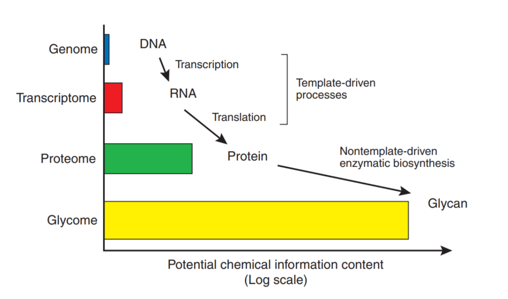
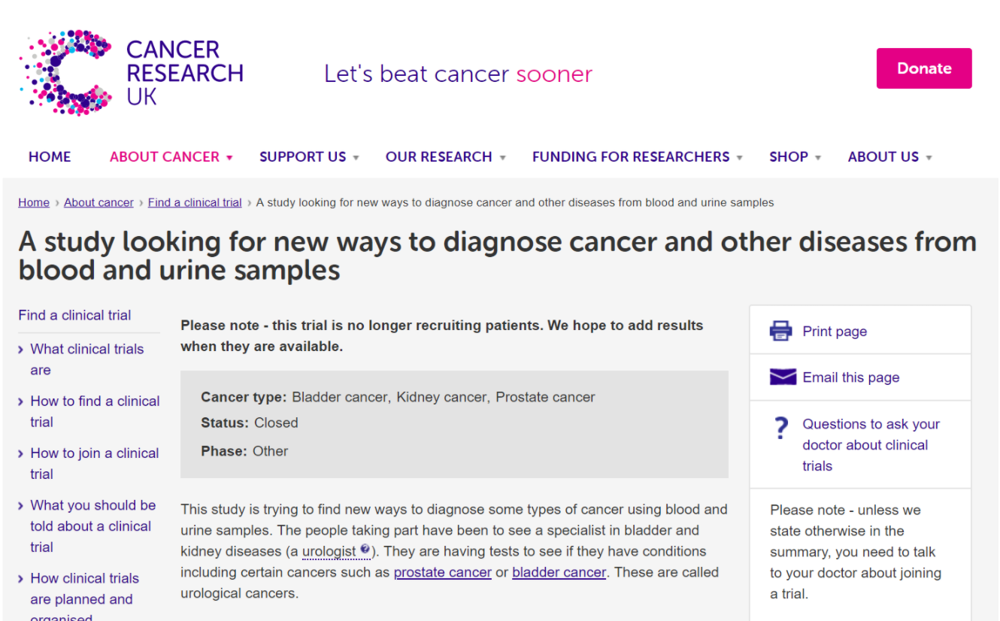

Clinical Diagnostics
Learning Moments
It was very valuable moving from the ‘academic’ perspective to the clinical perspective:
Some key learnings:
- Clinical studies that seek to ‘prove’ utility tend to have far larger numbers of samples than the academic studies used to attempt to find them in the first place. They tend to measure one or very few well controlled variables. It is worth thinking about what this may imply for the chances of success of discovery studies.
- Clinicians want to know more than ‘I can tell cancer from healthy’. They want to know if you can do it better than current clinical practice in a relevant target population.
- Regulators care about risk to the patient in a holistic sense. If you have a new test, where is it used? How might it alter treatment? What happens if your test gives a false positive or a false negative?
- Clinical diagnosis is rarely 100% so be suspicious whenever you see a headline with perfect diagnostic results from a new test.
- Decision thresholds matter a lot in assessment of performance of a new test. Your measurements matter most around that area. A nice linear homoscedastic relationship across a large range may not be as good as a heteroscedastic one
- Medical records are nowhere near as complete as the media leads us to believe
Studies at biosignatures
The measurement platform focused the proteome and protein isoforms (mainly the glycome). There is higher information content and, as the biological processes are not template driven, a large proportion of the information is not visible from genome analysis. To a large degree, the glycome that can be expressed by an individual, cannot be predicted from the genome.

We selected urological neoplasms as the target area and all samples would be from referred patient populations on an intention to treat basis. There would be no ‘healthy’ recruitment groups and no ‘convenience samples’. This would be the populations the clinicians had to differentiate in routine clinical practice. The discovery study did deviate from pure standard practice in that cancers were enriched from pre-surgery lists etc. and the samples were spun down and stored at -80\(^o\)C within 45 mins of venepuncture.
 * this listing no longer appears on the CRUK site. NOTE: CRUK provided the overview for information purposes only and was not involved in the study design or execution.
The discovery study collected around 1000 samples from our primary clinical site and 250 from our secondary.
 http://www.isrctn.com/ISRCTN52361806
http://www.isrctn.com/ISRCTN52361806
This study recruits directly from the clinical need population (i.e. the PSA diagnostic grey area). The study is designed with two interim recruitment arms, each powered to deliver the primary endpoint.
The study is blinded and provides a low bias assessment of the performance of a new test. It can be used to calibrate the performance in a given population. Similar calibration studies may be required in different genetic populations.